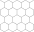

Life on the lattice:
self-avoiding walks, polygons, animals, and more
Nicholas Beaton
nrbeaton@unimelb.edu.au
Highlights in Mathematical Physics
August 28, 2025
Summary
Introduction
Suppose we want to walk from one corner of the CBD to the opposite corner, without ever walking along the same street segment twice.
The street segments form a graph.
Then a path that never visits the same vertex twice is a self-avoiding walk.


Lattices
For our purposes a lattice is an infinite, connected, vertex-transitive graph.
 |
 |
Self-avoiding walks
A self-avoiding walk (SAW) $\omega$ is a sequence of lattice vertices $(\omega_0, \omega_1, \dots, \omega_n)$ such that $\omega_i \neq \omega_j$ for $i\neq j$, and $\omega_i,\omega_{i+1}$ are adjacent on the lattice for each $i=0,\dots,n-1$. We say $\omega$ has size $|\omega| = n$.
Since the lattice is vertex-transitive, if one SAW is a translation of another we consider them to be the same. Equivalently assume $\omega_0 = 0$.
For a given lattice take $c_n$ to be the number of SAWs of size $n$. Then eg. on the square lattice \[ (c_n)_{n\geq0} = (1, 4, 12, 36, 100, 284, 780, \dots) \]
Self-avoiding polygons
A self-avoiding polygon (SAP) $\pi$ is a sequence of lattice vertices $(\pi_1, \pi_1, \dots, \pi_{n})$ such that $\pi_i \neq \pi_j$ for $i\neq j$, and $\pi_i,\pi_{i+1}$ are adjacent on the lattice, and so too are $\pi_1,\pi_n$. The size of $\pi$ is $n$.
Equivalently a SAP is a SAW which ends adjacent to its initial vertex.

For our purposes two SAPs are the same if they are translates of one another. So there are $2n$ SAWs (of length $n-1$) corresponding to each SAP of size $n$. Let $p_n$ be the number of size-$n$ SAPs. Then eg. on the square lattice \[ (p_n)_{n\geq0} = (0,0,0,0,1,0,2,0,7,0,28,0,124,\dots) \] (On some other lattices can have SAPs of odd size.)
Lattice animals
Two flavours: bond animals and vertex animals.
A bond animal is a collection of lattice edges (ie. pairs of adjacent vertices) such that the resulting graph is connected. Every SAW or SAP is a bond animal.
A site animal is a collection of lattice vertices such that the induced graph (ie. draw an edge between any pair of vertices which are adjacent on the lattice) is connected. These are also called polyominoes.
In both cases the size is the number of edges and the order is the number of vertices. (For SAPs and SAWs these are equivalent.) As usual, counted up to translation.
Other lifeforms
There are many many other objects of study, eg.
- Lattice trees: lattice animals which contain no cycles.
- Directed walks/animals/trees: only allow steps/edges in certain directions.
- SAPs can be counted by area instead of perimeter.
- Polycubes: connected set of cubes, counted by volume.
- Convex polygons
- Punctured polygons
- etc etc etc
Motivation
These objects are interesting in their own right - lots of work dedicated to counting and analysing them.
But also lots of connections to other fields.
Polymer models
Conception for SAWs is usually credited to Paul Flory (J. Chem Phys. 1949). He was interested in a theoretical model for long linear polymer chains in solution. In particular he wanted a model which accounted for the excluded volume principle: the idea that two monomers in a chain cannot occupy the same space.
 |
|
| poly(2-vinylpyridine) (Y. Roiter & S. Minko, J. Amer. Chem. Soc. 2005) | square lattice SAW of length $2^{25}$ (N. Clisby 201?) |
SAWs (or SAPs, trees, etc., depending on the model) turn out to be a good model for polymers in a good solvent (at least for long ones). They display the same metric properties - ie. how much they "spread out".
Interacting polymers
In addition to polymers floating in solution, polymers can interact with
- themselves
- other polymers
- their environment
- external forces
 |
These systems undergo phase transitions.
Percolation
Animals (vertex or bond) are equivalent to percolation clusters, and SAWs and SAPs are also closely connected: eg. for bond percolation in $d\geq2$ dimensions \[ \frac{1}{\mu_d} \leq p_c(d) \] where $\mu_d$ is the connective constant of the lattice (defined later in this talk).
The $N$-vector model
The $N$-vector model is a generalisation of the Ising model of ferromagnetism. For the Ising model the Hamiltonian is \[ \mathcal{H} = -\sum_{x\sim y} S^{(x)}S^{(y)} \] where the sum is over all adjacent pairs of vertices, and the spins are $\pm1$. For some function $F$ of the spins, the expected value of $F$ is \[ \langle F\rangle = \frac1Z \mathbb{E}(F e^{-\beta \mathcal{H}}) \] where the expectation is with respect to the product of the Bernoulli measures on the spins, $\beta\geq0$ is inverse temperature, and $Z$ is the partition function \[ Z = \mathbb{E}(e^{-\beta\mathcal{H}}).\]
The $N$-vector model cont'd
The two-point function is \[ \langle F\rangle = \langle F(0,x)\rangle = \langle S^{(0)} S^{(x)}\rangle \] For small $\beta$ (large $T$) this decays exponentially: \[ \langle S^{(0)} S^{(x)}\rangle \bowtie e^{-r(\beta)|x|} \]
The correlation length is $\xi(\beta) = \frac{1}{r(\beta)}$. For $d\geq2$ there is a critical (inverse) temperature $\beta_c$ such that \[ \xi(\beta) \sim \text{const.}(\beta_c-\beta)^{-\nu} \quad \text{as }\beta\nearrow\beta_c. \] Similarly the susceptibility is \[ \chi(\beta) = \frac1d\sum_x \langle S^{(0)}S^{(x)}\rangle \] and \[ \chi(\beta) \sim \text{const.}(\beta_c-\beta)^{-\gamma} \quad \text{as }\beta\nearrow\beta_c. \]
The $N$-vector model cont'd
For the $N$-vector model, the $\pm1$ spins are replaced by values in the $N$-dimensional sphere of radius $\sqrt{N}$. The product of spins becomes a dot product, and the measure becomes the product of uniform measures on the sphere. Quantities like two-point functions and susceptibilities are similarly defined.
P.G. de Gennes (Phys. Lett. A 1972) used (non-rigorous) renormalisation group methods to analyse the $N$-vector model, and then showed that one can (in a sense) take $N\to0$. This leads to a generating function for SAWs: \[ \lim_{N\to0}\langle S^{(0)}_i \cdot S^{(x)}_j\rangle = \delta_{i,j} \sum_{\omega\,:\,0\to x}\beta^{|\omega|} \] where $S^{(x)}_i$ is the $i$-th component of $S^{(x)}$ and the sum is over all SAWs from 0 to $x$.
Those renormalisation groups methods give exact (conjectural) values for critical exponents like $\nu$ and $\gamma$ in the $N\to0$ limit, which we will encounter again later. eg. in $d=2$ \[ \nu = \frac34 \qquad\qquad \gamma = \frac{43}{32}.\]
Knots
Headphone cables, shoelaces, necklaces, and even polymer molecules can get tangled up in knots and links.
H.L. Frisch and E. Wasserman (J. Amer. Chem. Soc. 1961) and M. Delbruck (Proc. Symp. Appl. Math. 1962) conjectured that random simple closed curves in $\mathbb{R}^3$ will be knotted with high probability. More precisely, the probability of being unknotted decays exponentially with the length of the curve.
 |
|
| (S.A. Wasserman et al, Science 1985) |
The FWD conjecture was first proved by D.W. Sumners and S.G. Whittington (J. Phys. A: Math. Gen. 1988) for SAPs on the cubic lattice. Their method used pattern theorems.
Subsequently proved for a number of other models (on and off the lattice).
Fundamental results & open questions
The definitions of SAWs, SAPs etc. are easy to understand, but actually proving anything is a different story.
An explicit expression for $c_n$, $p_n$, etc. will almost certainly never be found.
A few important results have been proved, and more are widely expected to be true but remain unproved.
Subadditivity & connective constants
For a given lattice the limit \[ \log \mu = \lim_{n\to\infty} \frac1n \log c_n \] exists and is equal to $\inf_n \frac1n \log c_n$.
A SAW of length $m+n$ can be split into two SAWs of lengths $m$ and $n$, implying \[ c_{m+n} \leq c_m c_n \quad \Rightarrow \quad \log c_{m+n} \leq \log c_m + \log c_n.\]
For a subadditive sequence $(a_n)_{n\geq1}$, the limit $\lim_{n\to\infty}\frac{a_n}{n}$ exists and equals $\inf_{n} \frac{a_n}{n}$ (which may be $-\infty$).
The value $\mu$ is called the connective constant of the lattice. Follows that \[ c_n = e^{o(n)}\mu^n \]
Subadditivity & connective constants cont'd
In $d\geq2$ dimensions the value of $\mu$ is not known, except one special case:
For the honeycomb lattice \[ \mu = \sqrt{2+\sqrt{2}}. \]
Otherwise only have numerical estimates (later).
Superadditivity & connective constants
SAPs cannot be split in two like SAWs - but instead they can be concatenated: \[ p_{m+n} \geq p_m p_m \] In fact SAPs and SAWs are closely related.
\[ \lim_{n\to\infty} \frac1n \log p_n = \log\mu \] where $\mu$ is the same as for SAWs.
Fekete's lemma can be used to show that the limit exists, then SAPs can be split into SAWs to show it is the same $\mu$.
Animals are also superadditive $\Rightarrow$ they have growth rates. Not the same values as SAWs/SAPs.
Subexponential behaviour for SAWs and SAPs
Recall that $c_n = e^{o(n)}\mu^n$. For $d=2,3$ it is believed that \[ c_n = \text{const.}n^{\gamma-1}\mu^n(1+o(1)) \] with same $\gamma$ as for the susceptibility of the $N$-vector model near criticality. Value of $\gamma$ depends on dimension, but not the specific lattice (unlike $\mu$). So for $d=2$ expected that $\gamma = \frac{43}{32}$.
For $d=4$ expected that $\gamma=1$ with an additional $(\log n)^{\frac14}$ factor.
For $d\geq5$, \[ c_n = \text{const.}\mu^n(1+o(1)) \]
Similar story for SAPs: expected that \[ p_n = \text{const.}n^{\alpha-3}\mu^n(1+o(1)) \] with $(\log n)^{\frac14}$ correction when $d=4$. For $d=2$ expected that $\alpha=\frac12$.
Subexponential behaviour for animals
Lattice animals (bond and site) and trees are all believed to be in the same universality class, for all dimensions. Expect \[ a_n = \text{const.}n^{-\theta}\lambda^n(1+o(1)) \] where $\lambda$ depends on the model and/or lattice, but $\theta$ depends only on the dimension.
In 2D and 3D expect (G. Parisi & N. Sourlas, Phys. Rev. Lett. 1981) $\theta=1$ and $\theta=\frac32$ respectively. For $d \geq 9$ expect mean-field behaviour $\Rightarrow$ $\theta=\frac52$. Logarithmic correction when $d=8$.
What do they look like?
Different ways of measuring this, but often want to know how "spread out" they are. eg. radius of gyration $R_g$ defined by \[ R^2_g(\omega) = \frac{1}{2n^2}\sum_{\omega_i,\omega_j \in \omega} |\omega_i-\omega_j|^2 \] where the sum is over all pairs of vertices in $\omega$.
Average over all objects of size $n$. Expect a power law \[ \langle R_g\rangle_n = \text{const.}n^\nu(1+o(1)) \] with a logarithmic correction for the upper critical dimension. Depends only on dimension, not the lattice.
For SAWs and SAPs this is the same $\nu$ as for the two-point function of the $N$-vector model, ie. $\nu=\frac34$ for $d=2$. For $d \geq 5$ it is the same as for random walks, ie. $\nu=\frac12$ (T. Hara & G. Slade, Comm. Math. Phys. 1992)
For animals and trees $\nu$ expect $\nu=\frac12$ when $d=3$ and $\nu=\frac14$ when $d>8$.
Scaling relations
Let $G_z(0,x)$ be the generating functions of SAWs which start at $0$ and end at $x$: \[ G_z(0,x) = \sum_{\omega\,:\,0\to x}z^{|\omega|} \] Then with $z_c = \frac{1}{\mu}$, it is expected that \[ G_{z_c}(0,x) \sim \frac{\text{const.}}{|x|^{d-2+\eta}} \quad\text{as }|x|\to\infty \] for a constant $\eta$. The exponents $\gamma, \nu, \eta$ are then believed to obey Fisher's scaling relation \[ \gamma = (2-\eta)\nu. \]
There also exist hyperscaling relations in which the dimension $d$ appears: \begin{align*} d\nu -2 + \alpha &= 0 \\ d\nu -2\Delta_4 + \gamma &= 0 \end{align*} ($\Delta_4$ is another exponent related to pairs of SAWs.) However these are known to fail for $d\geq5$.
Computational methods & results
These generally fall into two categories: series analysis and Monte Carlo (random sampling) methods.
Typically (but not always) series analysis gives better results in $d=2$ and Monte Carlo does better for $d\geq3$. Main reason is that the numbers grow too fast in $d\geq3$ to get long enough series.
Recently some other transfer matrix methods have been developed for $d=2$.
Enumeration
Many different methods for enumeration. In 2D the most powerful is the finite lattice method - counts configurations in boxes by building them one "slice" at a time:
Originally developed by I. Enting (J. Phys. A 1980) and subsequently improved by several others, most prominently I. Jensen.
For SAWs and SAPs, reduces computational complexity from $O(\mu^n)$ to about $O(1.2^n)$.
In higher dimensions the FLM does not work well - there are other algorithms which offer (much more modest) improvements over direct enumeration.
Series analysis
Basic idea: compute the coefficients of a sequence (eg. $c_n$) up to some $n=N$, then try to "extrapolate". A.J. Guttmann world expert in series analysis.
For example on the square lattice $p_n$ is known up to $n=130$ (N. Clisby & I. Jensen, J. Phys. A 2012). The best way to analyse the series is to use differential approximants, where one searches for DEs satisfied by the truncated power series \[ C_N(z) = \sum_{n=0}^N c_n z^n \] and then looks for singular points.
Monte Carlo methods
Many many different algorithms for random sampling configurations. Each has its own strengths and weaknesses.
One of the most powerful for SAWs & SAPs (in $\geq3$D) is the pivot algorithm. Essentially: choose a section of the object at random, and attempt to apply a random lattice symmetry (rotation or reflection). If the result is still self-avoiding, keep it; otherwise, reject.

Proposed moves are rarely successful, but when they do succeed they make large changes. N. Clisby's algorithm (J. Stat. Phys. 2010) requires only $O(\log n)$ time per attempted move. He has used the algorithm to sample SAWs with billions of steps.
One weakness is that for SAPs pivots can change the topology.
Connective constants
For the square lattice a completely different method using the eigenvalues of a "Topological Transfer Matrix" has recently been found (J.L. Jacobsen et al, J. Phys. A 2016) to be more efficient. The current best estimate is now \[ \mu_\text{sq} = 2.63815853032790(3) \]
For the triangular lattice, series analysis does best (I. Jensen, J. Stat. Mech. 2004): \[ \mu_\text{tri} = 4.150797226(9) \]
In 3D \begin{align} \mu_\text{sc} &= 4.684039931(27) \\ \mu_\text{fcc} &= 10.037075(20) \\ \mu_\text{bcc} &= 6.530520(20) \end{align} The sc value is due to a very sophisticated Monte Carlo study (N. Clisby, J. Phys. A 2013); the fcc and bcc values come from series analysis (Schram et al, J. Stat. Mech. 2017).
(Estimates exist for growth rates of animals too.)
Critical exponents for SAWs
All numerical work strongly supports the conjectures $\gamma=\frac{43}{32}$ and $\nu = \frac34$ in 2D.
In 3D there is no reason to believe exponents are rational. Most precise estimates for SAWs are due to Clisby (J. Phys. A 2017 and Phys. Rev. Lett. 2010) \[ \gamma = 1.15695300(95) \qquad\text{and}\qquad \nu = 0.587597(7) \]
Further reading
- N. Madras & G. Slade, The Self-Avoiding Walk, Birkhäuser, 1996.
- A.J. Guttmann (ed), Polygons, Polyominoes and Polycubes, Springer, 2009.
- E.J. Janse van Rensburg, The Statistical Mechanics of Interacting Walks, Polygons, Animals and Vesicles, OUP, 2000.